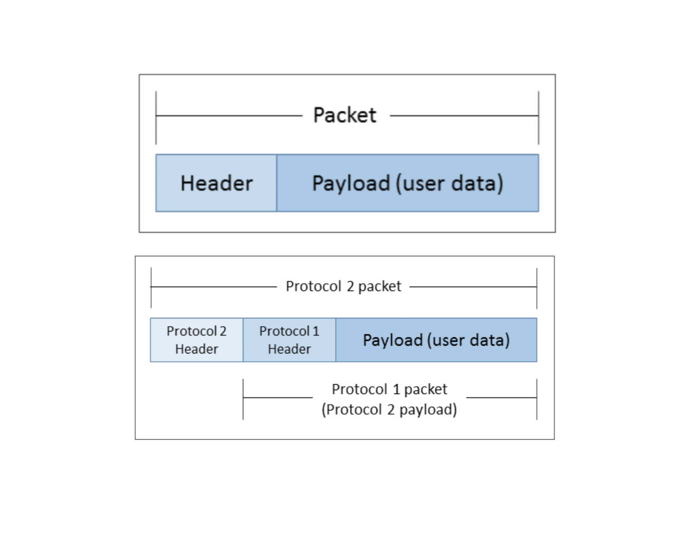

Referring to the terminal.md commands, the following bash commands allow us to retrieve our IP address:
$ ipconfig getifaddr en0 $ ifconfig # look for en0 > inet
Two main functions of IP addresses:
Notes:
There exist special IP address ranges that will never be assigned to any organization and at such available for anyone to use for their networks:
If anyone can use these addresses, wouldn't that lead to devices on the Internet using the same address? No, because traffic from private addresses (the 3 ranges above) do not route over the public Internet. Whenever a network using private addresses need to communicate with the public Internet a protocol known as Network Address Translation is used. Our home network and private office network, whether wired or wireless, issue IP addresses that fall into one of the three ranges.
- NAT is a process in which our router changes our private IP address into a public one so we can transmit data over the Internet
- When information comes back to our router, it reverses the change from a real IP address (public) to a private one and forwards the traffic back to our computer
Private addresses are known as non-routable addresses. The networking on the Internet routes Internet activity connected to our public IP address only and not our private IP. Private IP addresses are untracked and unrestricted and IP lookup services cannot geographically locate a user's computer by them.
$ dig +short myip.opendns.com @resolver1.opendns.com
103.86.158.102
103.86.158.102 is our public IP address. When we inspect the output from ifconfig, notice that our devices are using private range addresses (not the public one) assigned by our broadband router through DHCP.
A nifty tool useful for mapping our network is Nmap. From ifconfig we figured out our inet (192.168.88.162) and netmask (0xffffff00 or equivalently: /24) so we can use that with Nmap:
$ nmap -sn 192.168.88.0/24 Starting Nmap 7.70 ( https://nmap.org ) at 2019-03-13 18:25 WIB Nmap scan report for 192.168.88.1 Host is up (0.046s latency). Nmap scan report for 192.168.88.160 Host is up (0.032s latency). Nmap scan report for 192.168.88.162 Host is up (0.00040s latency). Nmap scan report for 192.168.88.214 Host is up (0.073s latency). Nmap scan report for 192.168.88.224 Host is up (0.079s latency). Nmap scan report for 192.168.88.232 Host is up (0.019s latency). Nmap scan report for 192.168.88.251 Host is up (0.020s latency). Nmap done: 256 IP addresses (7 hosts up) scanned in 4.53 seconds
Using ifconfig we see a list of hardware interfaces on our machine. An interface is a device's physical connection to its network media. A smartphone likely have at least 2 interfaces for example, one for connecting to WiFi networks and one for LTE networks.
An interface is usually assigned only one IP address and each interface in a device has a different IP address. This makes concrete the point about IP addresses' first main function: uniquely address each device's connection to a network.
Each device has a virtual interface called the loopback interface (aka localhost, conventionally assigned 127.0.0.1). From the output of ifconfig we see this:
lo0: flags=8049<UP,LOOPBACK,RUNNING,MULTICAST> mtu 16384 options=1203<RXCSUM,TXCSUM,TXSTATUS,SW_TIMESTAMP> inet 127.0.0.1 netmask 0xff000000 inet6 ::1 prefixlen 128 inet6 fe80::1%lo0 prefixlen 64 scopeid 0x1 nd6 options=201<PERFORMNUD,DAD>
Packetization is used widely across the Internet protocol suite to manage how data is transmitted across a network. This protocol breaks data up into small units (sequences of byters) and prefix the data (payload) in each unit (packet) with some protocol-specific information (known as header).
Header contains information that the protocol implementation running on another device needs, to know how to interpret the packet. It includes:
Protocols may call upon other protocols to handle their packets for them and when both protocols employ packetization it result in nested packets as illustrated below. This is also called encapsulation.
|  |
|---|
| Source: Learning Python Network Programming |
A simplified definition of a network is that all devices on the network share a single point of connection to the rest of the Internet.
How exactly does routers route traffic toward a destination networking using IP addresses and routing tables? It would be infeasible in practice to program every router's routing table for the everchanging 4 billion+ IP addresses. The answer lies in another property of IP addresses.
An IP address has two logical parts: a network prefix and a host identifier.
192.168.0.186/24, known as the CIDR notation.255.255.255.0255.255.255.0 is equivalent to /24.| Dot-decimal notation / Binary notation | CIDR |
|---|---|
| 255.0.0.0 = 11111111 00000000 00000000 00000000 | /8 |
| 255.192.0.0 = 11111111 11000000 00000000 00000000 | /10 |
| 255.255.255.0 = 11111111 11111111 11111111 00000000 | /24 |
| 255.255.255.240 = 11111111 11111111 11111111 11110000 | /28 |
AND operation on the IP address and the subnet maskWhen a network device needs to deliver data across a network, it first compares the destination's IP address with its own network prefix. If the destination IP address has the same network prefix as that of the sending device, then it recognizes that the destination device is on the same network and can send the traffic directly to it. If the network prefixes differ, it will send the message to its default gateway, which will forward it on towards the receiving device.
When a router receives traffic that has to be forwarded, it does a similar check:
When we create a network with a given network prefix, the digits to the right of the network prefix are available for assignment to the network devices. The number of the available addresses is since two of the addresses are reserved
/28 network prefix, we have 4 bits left, so = 14 addresses are available for assignmentGoing back to the result of our ifconfig call:
en0: flags=8863<UP,BROADCAST,SMART,RUNNING,SIMPLEX,MULTICAST> mtu 1500 ether f0:18:98:55:ef:d8 inet6 fe80::1c6c:449d:1dc9:d60a%en0 prefixlen 64 secured scopeid 0xa inet 192.168.88.162 netmask 0xffffff00 broadcast 192.168.88.255 nd6 options=201<PERFORMNUD,DAD> media: autoselect status: active
Our netmask 0xffffff00 translates to a /24 bitmask. Some references:
| Bitmask (Bits) | Dotted Decimal | Hexadecimal | Binary |
|---|---|---|---|
| /0 | 0.0.0.0 | 0x00000000 | 00000000 00000000 00000000 00000000 |
| /1 | 128.0.0.0 | 0x80000000 | 10000000 00000000 00000000 00000000 |
| /2 | 192.0.0.0 | 0xc0000000 | 11000000 00000000 00000000 00000000 |
| /12 | 255.240.0.0 | 0xfff00000 | 11111111 11110000 00000000 00000000 |
| /24 | 255.255.255.0 | 0xffffff00 | 11111111 11111111 11111111 00000000 |
In other words: 192.168.88 is the network prefix and the host. Recall our earlier points about reserved addresses:
- 192.168.88.0 is the network address
- 192.168.88.255 is the broadcast address (confirmed by the console output)
When we browse the web or send an email, we usually connect to servers using host names or domain names and these domains must somehow map to the servers' IP addresses, and that is done through a globally distributed database of mappings between hostnames and IP addresses known as the Domain Name System (DNS).
$ nslookup algorit.ma Server: 192.168.88.1 Address: 192.168.88.1#53 Non-authoritative answer: Name: algorit.ma Address: 103.9.100.186
Our website's host has the IP address 103.9.100.186. When connecting to a network, our device will be given a local DNS server through either DHCP or manually and it will query this local server when doing DNS lookups. If that server doesn't know the IP address then it will query its own configured higher tier server, and so on until a match is found. ISPs run their own DNS caching servers and broadband routers often act as caching servers as well. Our device's local server in this case is 192.168.88.1